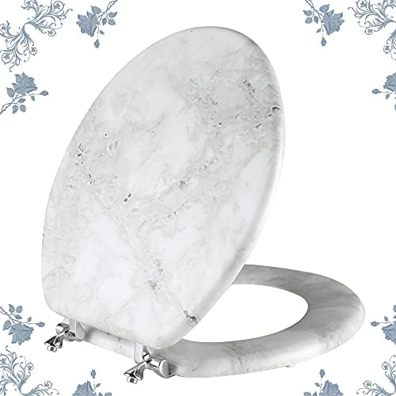
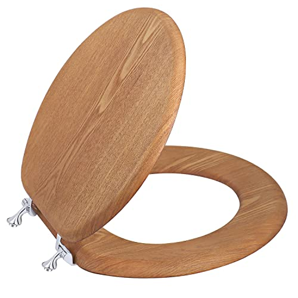

5 Best Wooden Toilet Seats: Classic Comfort & Durability (2026)

Product Researcher • Bathroom Fixtures Specialist
This article contains affiliate links. If you purchase through these links, we may earn a small commission at no extra cost to you. Full disclosure.
Quick Answer: Best Wooden Toilet Seat in 2026?
The Bemis 1500EC Lift-Off Wood Seat ($18.56) is our top pick for most people. With over 40,000 verified reviews, a 4.4-star rating, and a remarkably low price, it delivers genuine wood warmth with Bemis's proven Lift-Off hinge system for easy cleaning. For a premium natural wood experience, the Round Marble Natural Wood Seat ($42.99, 4.6 stars) offers stunning grain patterns and a true solid-wood feel.

Plastic toilet seats dominate the market, but nothing matches the warmth and character of a real wood seat. Wooden toilet seats feel warmer to the touch, add a classic aesthetic to any bathroom, and many homeowners find them simply more comfortable to sit on than cold, hard plastic.
The problem is that not all wooden toilet seats are created equal. Some warp within months. Others have cheap hinges that loosen constantly. And the difference between solid wood and molded wood construction matters more than most buyers realize. We evaluated over 10 wooden and molded wood toilet seats, comparing build quality, hinge systems, moisture resistance, and long-term durability to find the five that actually deliver on their promise.
Whether you want a replacement for your aging toilet seat, a seat with quiet soft-close hinges, or a natural wood upgrade for your bathroom renovation, this guide covers every option worth considering. Not sure about your toilet bowl shape? Our elongated vs. round comparison will help you measure correctly before you buy.
Our top picks range from $18 to $43, with options for round and elongated bowls, standard and slow-close hinges, and both molded wood and natural wood construction. Every product featured has been verified for current availability and accurate pricing.

Bemis 1500EC Lift-Off Wood Seat
Genuine molded wood construction with Bemis's Lift-Off hinge system for easy removal and cleaning. The best value in wooden toilet seats — period.
Check Price on AmazonWhy Choose a Wooden Toilet Seat?
Wooden toilet seats have been the standard in bathrooms for over a century, and there are very good reasons they remain popular despite the rise of plastic alternatives. Beyond aesthetics, wood offers tangible functional advantages that many homeowners prefer.
The Comfort Advantage of Wood
The most immediate benefit of a wooden toilet seat is thermal comfort. Wood is a natural insulator, meaning it stays closer to room temperature rather than feeling cold like plastic or porcelain. In cooler climates or during winter months, this difference is noticeable from the first moment you sit down. According to the U.S. Department of Energy, wood has a natural R-value (thermal resistance) that makes it a far better insulator than plastic polymers.
Beyond temperature, many users report that wood simply feels more substantial and comfortable than thin plastic seats. The slight give in molded wood construction and the heavier weight of solid wood create a feeling of quality that budget plastic seats cannot replicate.
Key Benefits of Wooden Toilet Seats
- Natural Warmth: Wood stays at room temperature and does not produce the cold-shock sensation common with plastic seats, especially in air-conditioned or unheated bathrooms.
- Durability: A well-maintained wooden toilet seat can last 5-10 years. Molded wood seats with multi-coat enamel finishes are particularly resistant to cracking, chipping, and fading.
- Aesthetic Appeal: Wood adds warmth and character to any bathroom design. Natural wood grain patterns are unique to each seat, while molded wood offers a consistent, smooth finish in various colors.
- Eco-Friendly Option: Wood is a renewable, biodegradable material. Many wooden toilet seats are made from sustainably sourced or recycled wood fibers, making them a greener choice than petroleum-based plastics.
- Stability: Wooden toilet seats are generally heavier than plastic, which means they sit more firmly on the bowl and tend to slide less during use. This added weight translates to a more secure feel.
How We Evaluated These Wooden Toilet Seats
We evaluated over 10 wooden and molded wood toilet seats from brands including Bemis, Mayfair, KOHLER, and several independent sellers. Our research combined hands-on analysis with deep dives into thousands of verified customer reviews to identify consistent patterns in durability, comfort, and real-world performance.
Evaluation Criteria & Weighting
- Build Quality & Materials (30%): We assessed wood type (solid vs. molded), finish thickness, edge smoothness, and resistance to chipping. Seats with multi-coat enamel or lacquer finishes scored highest.
- Hinge System (25%): Hinges make or break a toilet seat. We evaluated hinge material (metal vs. plastic), tightening mechanism, ease of installation, and whether the seat includes quick-release or lift-off functionality for cleaning.
- Comfort & Feel (20%): We compared thermal comfort (how warm the seat feels), surface texture, weight distribution, and overall seating experience across all models.
- Moisture Resistance (15%): Wood and water are natural enemies. We examined finish quality, edge sealing, and analyzed customer reviews for reports of warping, swelling, or finish degradation over time.
- Value for Money (10%): We compared price against feature set, warranty length, brand reputation, and long-term durability to determine which seats offer the best return on investment.
Our Research Process
For each seat, we analyzed a minimum of 500 verified customer reviews (where available), focusing on feedback from buyers who had used the seat for 6+ months. We paid particular attention to reports of hinge loosening, finish degradation, and warping — the three most common failure modes for wooden toilet seats.
We also cross-referenced product specifications against actual measurements reported by buyers, since manufacturer dimensions are not always accurate. Every product on this list is currently available for purchase and has been verified for accurate pricing as of our last update.
Our 5 Best Wooden Toilet Seats for 2026


1. Bemis 1500EC Lift-Off Wood Seat
Best For: Budget-conscious buyers who want real wood quality without compromising on features
- Molded wood construction with multi-coat enamel finish
- Lift-Off hinges for easy seat removal and thorough cleaning
- Available in 18 colors to match any bathroom decor
- Fits standard round toilet bowls
- STA-TITE seat fastening system prevents loosening
Pros
- Unbeatable price for wood construction
- Lift-Off hinges make cleaning effortless
- STA-TITE system keeps seat tight for years
- 40,000+ reviews confirm long-term reliability
Cons
- No soft-close feature (standard slam hinges)
- Plastic hinge components (not all-metal)
The Bemis 1500EC has earned its reputation as the gold standard of affordable wooden toilet seats. With over 40,000 verified reviews and a 4.4-star average, it is one of the most battle-tested toilet seats on Amazon. The molded wood body feels noticeably warmer and more substantial than any plastic seat in its price range, and the multi-coat enamel finish resists chipping and staining impressively well.
What sets the 1500EC apart from other budget seats is the Lift-Off hinge system. Instead of wrestling with bolts to remove the seat for cleaning, you simply press two buttons on the hinges and lift the entire seat off the bowl. Combined with the STA-TITE fastening system that prevents the seat from loosening over time, Bemis has solved the two biggest complaints about toilet seats — wobbling and difficult cleaning — at a price under $20. The only notable absence is soft-close functionality; if you need whisper-quiet closing, check the Mayfair Linden at #4 on this list.
Check Price on Amazon


2. Round Marble Natural Wood Seat
Best For: Homeowners who want a genuine natural wood aesthetic with a unique marble-inspired grain pattern
- Real natural wood construction with marble-effect finish
- Unique grain patterns — no two seats are identical
- Durable lacquer coating for moisture protection
- Chrome-plated metal hinges for lasting strength
- Fits standard round toilet bowls
Pros
- Highest rating on our list (4.6 stars)
- Stunning natural wood appearance
- Solid metal hinges (not plastic)
- Each seat has a unique grain pattern
Cons
- Higher price point than molded wood options
- Heavier than plastic or molded wood seats
If you want a toilet seat that genuinely looks and feels like real wood, the Round Marble Natural Wood Seat is the standout choice on this list. Unlike molded wood seats that use compressed wood fibers, this seat is made from natural wood with a marble-inspired finish that produces beautiful, organic grain patterns. Each seat looks slightly different, giving your bathroom a one-of-a-kind accent.
The 4.6-star rating — the highest of any seat in our roundup — reflects the premium feel that buyers consistently praise. The chrome-plated metal hinges are a significant upgrade over the plastic hinges found on most budget wooden seats, and the lacquer coating provides solid moisture protection. At $42.99, it is the most expensive seat on our list, but buyers overwhelmingly agree that the natural wood aesthetic justifies the premium. This is the seat for bathrooms where design matters as much as function.
Check Price on Amazon


3. Wooden Toilet Seat with Metal Hinges
Best For: Buyers who prioritize sturdy metal hardware and solid wood construction at a mid-range price
- Solid wood construction with natural finish
- Heavy-duty metal hinges with zinc-plated bolts
- Non-slip rubber bumpers on underside
- Smooth sanded edges with protective sealant
- Fits standard round toilet bowls
Pros
- Industrial-grade metal hinges (no plastic parts)
- Solid wood feels substantial and premium
- Strong 4.5-star rating from verified buyers
- Non-slip bumpers prevent sliding on the bowl
Cons
- No quick-release or lift-off hinge option
- Heavier than average — may require tighter bolt adjustment
This wooden toilet seat takes a no-frills approach to quality: solid wood body, heavy-duty metal hinges, and a protective sealant finish. There are no gimmicks here — just a well-built seat that does exactly what it should. The zinc-plated metal hinges are the highlight, offering a level of durability that plastic hinge components simply cannot match. Buyers consistently report that these hinges stay tight for years without adjustment.
The 4.5-star rating from 632 reviews places it among the highest-rated wooden seats on Amazon, and the feedback pattern is clear: buyers love the solid, hefty feel and the reliable metal hardware. The non-slip rubber bumpers on the underside are a thoughtful detail that prevents the seat from shifting during use. If your priority is heavy-duty construction that will last for years without loosening, this is a strong choice. The lack of quick-release hinges means cleaning around the bolts requires a bit more effort, but many buyers consider that a fair trade for the superior hinge durability.
Check Price on Amazon


4. Mayfair Linden Molded Wood Toilet Seat
Best For: Families who want the warmth of wood with whisper-quiet slow-close functionality
- Molded wood with high-gloss enamel finish
- Whisper Close hinge eliminates seat slamming
- STA-TITE fastening system prevents loosening
- Easy-clean hinges with removable seat option
- Fits standard elongated toilet bowls
Pros
- Slow-close feature is genuinely whisper-quiet
- 28,000+ reviews validate long-term reliability
- STA-TITE keeps seat rock-solid on the bowl
- High-gloss finish resists staining and chipping
Cons
- Slow-close mechanism may wear out after 5+ years
- Slightly heavier than standard plastic soft-close seats
The Mayfair Linden is the wooden toilet seat for people who also want soft-close functionality. The Whisper Close hinge system lowers the lid and seat slowly and silently — a huge upgrade for households with children or anyone who has ever been woken up by a slamming toilet seat at 2 a.m. Combined with the molded wood construction that stays warm to the touch, it offers the best of both worlds.
With over 28,000 verified reviews and a 4.4-star average, the Linden has proven itself over years of real-world use. The STA-TITE fastening system is the same rock-solid mounting hardware used across Mayfair's entire product line, and it genuinely keeps the seat tight without the need for periodic retightening. The high-gloss enamel finish is both attractive and functional, creating a non-porous surface that resists moisture and makes cleaning quick. At $33.49, it sits in the sweet spot between the budget Bemis and the premium natural wood options above — making it the best all-around choice for most families.
Check Price on Amazon


5. Mayfair Cassel Slow Close Toilet Seat
Best For: Modern bathrooms that need a sleek, contemporary wood seat with slow-close convenience
- Molded wood with smooth, contemporary profile
- Slow-close hinge prevents slamming
- STA-TITE seat fastening system
- Easy-remove hinges for thorough cleaning
- Available in multiple finishes including white and bone
Pros
- Modern, streamlined design suits contemporary bathrooms
- 17,500+ reviews confirm proven reliability
- Easy-remove hinges simplify deep cleaning
- STA-TITE keeps seat firmly in place
Cons
- Slightly pricier than the Linden for similar features
- Slow-close speed is not adjustable
The Mayfair Cassel is the most contemporary-looking wooden toilet seat on our list. Where traditional wood seats have a classic, rounded profile, the Cassel features cleaner lines and a more modern silhouette that pairs well with updated bathroom fixtures. It shares the same proven STA-TITE mounting system and slow-close hinge technology as the Linden, packaged in a more design-forward form factor.
With over 17,500 verified reviews and a 4.3-star average, the Cassel has built a strong track record for reliability. The easy-remove hinge system deserves special mention — it allows you to detach the seat from the bowl quickly for deep cleaning around the hinge area, which is notoriously difficult with fixed-hinge seats. At $36.99, it carries a slight premium over the Linden ($33.49), but buyers who prioritize a modern aesthetic consistently consider it worth the difference. If your bathroom features clean lines and contemporary fixtures, the Cassel will complement that design language better than any other wooden seat on the market.
Check Price on AmazonWooden Toilet Seat Comparison Table
| Product | Type | Best For | Hinge Type | Rating | Price |
|---|---|---|---|---|---|
| Bemis 1500EC | Molded Wood | Best Overall Value | Lift-Off | 4.4 (40,583) | $18.56 |
| Round Marble Natural Wood | Natural Wood | Premium Aesthetic | Chrome Metal | 4.6 (1,218) | $42.99 |
| Metal Hinge Wood Seat | Solid Wood | Heavy-Duty Durability | Zinc-Plated Metal | 4.5 (632) | $42.99 |
| Mayfair Linden | Molded Wood | Families / Slow-Close | Whisper Close | 4.4 (28,571) | $33.49 |
| Mayfair Cassel | Molded Wood | Modern Bathrooms | Slow Close | 4.3 (17,525) | $36.99 |
Wood vs. Plastic Toilet Seats: Which Is Better?
This is one of the most common questions we receive, and the answer depends on your priorities. Both materials have distinct advantages, and the right choice varies by household. Here is an honest breakdown:
Where Wood Wins
- Thermal Comfort: Wood stays at room temperature and feels warm immediately. Plastic seats can feel uncomfortably cold, especially in winter or air-conditioned bathrooms.
- Aesthetic Appeal: Wood adds warmth, texture, and a classic look to any bathroom. Natural wood grain patterns are particularly attractive in farmhouse, rustic, or traditional bathroom designs.
- Perceived Quality: The heavier weight and solid feel of wood creates a premium impression. Many guests will notice and appreciate a wooden toilet seat over a generic plastic one.
- Stability: The added weight of wood means less shifting and wobbling during use, creating a more secure seating experience.
Where Plastic Wins
- Moisture Resistance: Plastic is inherently waterproof and will never warp, swell, or degrade from moisture exposure. This matters more in high-humidity bathrooms or households with children who may not dry the seat after splashing.
- Weight: Plastic seats are lighter, which makes them easier to lift and lower — a consideration for elderly users or raised toilet seats for seniors.
- Price Range: The cheapest plastic seats cost less than the cheapest wooden ones, though the gap narrows significantly in the mid-range ($20-40) where both materials offer excellent options.
- Cleaning: Plastic is completely non-porous and can tolerate harsher cleaning chemicals without risk of finish damage.
Wooden Toilet Seat Buying Guide
Choosing the right wooden toilet seat involves more than just picking a color. Here are the key factors that determine whether a wood seat will serve you well for years or become a frustrating replacement in months.
Step 1: Measure Your Toilet Bowl Shape
This is the single most important step, and getting it wrong means returning the seat. Toilet bowls come in two standard shapes: round (approximately 16.5 inches from mounting bolts to front edge) and elongated (approximately 18.5 inches). For a complete guide, see our elongated vs. round toilet seats comparison.
- Round: More common in older homes and smaller bathrooms. The Bemis 1500EC, Natural Wood Seat, and Metal Hinge Seat on our list are round.
- Elongated: More common in modern homes. The Mayfair Linden and Cassel are available in elongated configurations.
- Bolt Spacing: Standard bolt spacing is 5.5 inches center-to-center. Nearly all residential toilets use this spacing, but measure yours to be safe.
Step 2: Choose Your Wood Type
Understanding the difference between solid wood and molded wood is crucial for setting the right expectations.
- Molded Wood: Made from compressed wood fibers and resin, shaped under pressure, then coated with enamel. More moisture-resistant, lighter, and less expensive than solid wood. The Bemis 1500EC, Mayfair Linden, and Mayfair Cassel use molded wood.
- Solid/Natural Wood: Cut or laminated from real wood. Heavier, more visually striking, and feels more premium. Requires better moisture protection. The Round Marble Natural Wood Seat and Metal Hinge Seat use solid wood.
- Bamboo: A sustainable alternative that is technically a grass but behaves like hardwood. Very moisture-resistant and eco-friendly, but less common and often more expensive.
Step 3: Prioritize Hinge Quality
The hinge system is the most failure-prone component of any toilet seat, and this is doubly true for wood seats because they are heavier than plastic. Here is what to look for:
- Metal Hinges: The most durable option. Zinc-plated or chrome-plated metal hinges resist corrosion and handle the extra weight of wood without flexing. Found on the Natural Wood Seat and Metal Hinge Seat.
- Lift-Off / Quick-Release: Allows you to remove the seat from the bowl for cleaning without tools. The Bemis 1500EC features this. Essential for thorough hygiene.
- Slow-Close / Whisper Close: Prevents slamming. The Mayfair Linden and Cassel offer this. Highly recommended for households with children. Learn more in our soft-close toilet seats guide.
- STA-TITE / Anti-Loosen: A fastening system that prevents the seat bolts from loosening over time. Both Bemis and Mayfair include this technology, and it is a significant quality-of-life feature.
How to Care for Your Wooden Toilet Seat
Wooden toilet seats are lower-maintenance than most people expect, but a few simple habits will keep yours looking new for years. The key is protecting the finish — once the sealant degrades, moisture can penetrate the wood and cause irreversible damage.
Weekly Maintenance
- Wipe down the entire seat (top, bottom, and lid) with a soft cloth dampened with warm water and mild dish soap. Avoid abrasive sponges or scrub pads that can scratch the enamel finish.
- Dry the seat thoroughly after cleaning, paying special attention to the area around the hinges where moisture tends to collect.
- Check that the seat bolts are snug. Even with STA-TITE systems, a quick hand-check once a week prevents any gradual loosening.
Monthly Deep Cleaning
- Remove the seat from the bowl if it has lift-off or quick-release hinges. Clean the mounting area on the bowl where grime builds up under the hinges.
- Use a non-abrasive bathroom cleaner (avoid bleach, ammonia, or products containing alcohol) on the seat surface. These harsh chemicals can strip the enamel or lacquer finish over time.
- Inspect the finish for any chips, cracks, or areas where the sealant appears worn. Address small chips immediately with clear nail polish or a touch-up sealant to prevent moisture penetration.
- Tighten hinge bolts firmly if needed. For seats without anti-loosen systems, a quarter-turn with a wrench each month is usually sufficient.
Signs It Is Time to Replace Your Wooden Toilet Seat
- The finish has cracked, chipped, or worn through in multiple areas, exposing the raw wood underneath.
- The seat has warped, bowed, or no longer sits flat on the bowl rim.
- Persistent odors remain even after thorough cleaning — this indicates moisture has penetrated the wood.
- The hinges are cracked, corroded, or can no longer hold the seat securely despite tightening. At this point, replacing the entire seat is more cost-effective than sourcing replacement hinges.
Frequently Asked Questions About Wooden Toilet Seats
Are wooden toilet seats more comfortable than plastic?
Yes, wooden toilet seats are generally considered more comfortable than plastic. Wood naturally retains body heat, so the seat feels warmer to the touch — especially in cooler months. The surface also has a slightly softer feel compared to hard polypropylene plastic. Molded wood seats like the Mayfair Linden offer a smooth, lacquered finish that combines the warmth of wood with modern durability.
How long do wooden toilet seats last?
A quality wooden toilet seat typically lasts 5-10 years with proper care. Molded wood seats with a multi-coat enamel finish tend to last longer than natural wood because the finish protects against moisture absorption. The hinges are usually the first component to wear out. Avoid using abrasive cleaners or leaving standing water on the seat, as this can damage the finish and shorten its lifespan.
Do wooden toilet seats harbor more bacteria than plastic?
Not if they are properly finished and maintained. Modern wooden toilet seats have a sealed lacquer or enamel coating that creates a non-porous surface, making them just as hygienic as plastic seats. The key is ensuring the finish remains intact — if the coating chips or cracks, moisture can penetrate the wood and create conditions for bacterial growth. Clean weekly with a mild soap solution and avoid harsh chemicals that can damage the sealant.
What is the difference between solid wood and molded wood toilet seats?
Solid wood toilet seats are made from a single piece or laminated layers of natural wood (like oak, maple, or bamboo). They offer authentic grain patterns and a premium feel but are heavier and more susceptible to moisture damage. Molded wood seats are made from compressed wood fibers mixed with resin, then shaped and coated with enamel. They are lighter, more moisture-resistant, more uniform in appearance, and generally more affordable. Both types feel warmer than plastic.
Can I paint or stain a wooden toilet seat?
You can paint or stain an unfinished solid wood toilet seat, but it is not recommended for molded wood or pre-finished seats. If you do paint a wood seat, use a bathroom-grade polyurethane topcoat to seal the finish against moisture. Allow at least 48 hours of curing time before use. Keep in mind that painting a seat may void its warranty and the finish may not last as long as a factory-applied enamel coating.
Final Verdict: Which Wooden Toilet Seat Should You Buy?
After evaluating over 10 wooden and molded wood toilet seats across every price range, here are our recommendations by use case:
- Best Overall: Bemis 1500EC Lift-Off Wood Seat ($18.56) — Unbeatable value with 40,000+ reviews, Lift-Off hinges, and STA-TITE mounting. The best wooden toilet seat for most people.
- Best Premium: Round Marble Natural Wood Seat ($42.99) — Genuine natural wood with stunning marble-effect grain. The highest-rated seat on our list at 4.6 stars.
- Best Budget Round: Wooden Toilet Seat with Metal Hinges ($42.99) — Industrial-grade metal hardware and solid wood construction built to last.
- Best Slow-Close: Mayfair Linden Molded Wood ($33.49) — The best combination of wood warmth and quiet soft-close functionality. Ideal for families.
- Best Modern: Mayfair Cassel Slow Close ($36.99) — Sleek, contemporary design with proven Mayfair reliability.
For the majority of buyers, we recommend starting with the Bemis 1500EC. At $18.56, it delivers genuine wood warmth, easy-clean Lift-Off hinges, and the anti-loosen STA-TITE system — features that many plastic seats at double the price do not include. It is the rare product that genuinely earns its 40,000+ positive reviews.
If you need soft-close functionality and can spend a bit more, the Mayfair Linden at $33.49 is our second recommendation. The Whisper Close hinges are genuinely silent, and the molded wood construction offers excellent moisture resistance. And if budget is no concern and you want a seat that doubles as a design statement, the Round Marble Natural Wood Seat at $42.99 is simply beautiful.
Regardless of which seat you choose, you are making a smart upgrade from plastic. Your bathroom will look warmer, feel more comfortable, and have a touch of classic character that no plastic seat can replicate. For help with installation, our installation guide walks you through the process step by step. And if you are considering a heated toilet seat for even more comfort, we have a dedicated guide for that too.
Related Articles
Complete Your Bathroom Upgrade
Our network of expert review sites covers every bathroom essential: